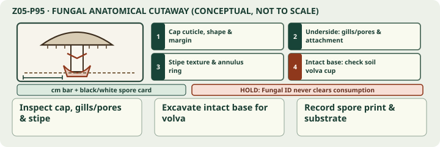

Z05-P95 · Wild foods and poisonous lookalikes · New manuscript
Fungal Anatomical Cutaway and Separate Mycological Schema
Apply a dedicated mycological anatomy checklist—cap, fertile underside, stipe, ring, basal volva, spore print, and substrate—separate from plant keys.
When it applies · All macrofungi observation and voucher documentation in Minnesota.
Equipment · MyCoPortal / regional mycology key, metric scale, dual black/white spore-print paper, wax/paper bag (never sealed plastic).

Actions
- Document fungi using the dedicated fungal schema: cap surface/margin, fertile underside (gills, pores, teeth, or smooth) and gill attachment (free, adnate, decurrent), stem texture, partial-veil ring (annulus), and intact base (volva or bulb).[B05]
- Always inspect the intact basal structure carefully—never cut a mushroom above the soil line and assume no volva exists—and record substrate (soil, deadwood, conifer vs hardwood host) plus dual-color spore print.[B05, B06, B07]
- Recognize that macroscopic photos alone cannot separate many cryptic or toxic fungal complexes; keep consumption status strictly WITHHELD pending qualified mycologist verification.[B05, B06, B24]
Failure recognition · Snapping off a mushroom cap above ground leaves behind a diagnostic basal volva, causing lethal Amanita species to mimic harmless edible mushrooms.[B05, B06, B07]
Verify · All six fungal anatomical structures plus substrate and spore-print data are logged with explicit consumption HOLD.[B05, B24]
Stop or change course · Stop identification immediately on immature button stages, decayed specimens, or any mushroom missing an intact base or spore print.[B05, B06, B24]
Evidence and editorial notes
- B05 · MyCoPortal · North American Fungal Voucher Collections Portal (Current web edition)
- Section: Separate fungal voucher collections and microscopic/macro traits · Conditions: Documenting macrofungi across North American collections
Support: Fungal taxonomy requires distinct anatomical schemas (cap, gills/pores/teeth, attachment, ring, volva, spore print, substrate, and often microscopy).
Limitations: Fungal species complexes frequently overlap macroscopically; photos alone cannot confirm edibility. · Conflicting evidence: None noted.
Editorial note: Keeps botanical and fungal schemas separate. · Specialist reviewer: Qualified mycologist
Primary source · checked 2026-11-25
Current assessment · A04-B05 (2026-11-25) · Open: support partial or missing (A04): Records can supply vouchers. No universal schema covers all fungi. Need taxon-specific monograph, angle and microscopy requirements. Limits: Specialist review PENDING (Qualified mycologist); publication HOLD. All release decisions pending. - B06 · CDC MMWR · Notes from the Field: Severe Mushroom Poisoning — Minnesota 2018 (MMWR 68(21))
- Section: 2018 incident and cited 2006 Minnesota outbreak · Conditions: Minnesota case evidence from distinct incidents
Support: The 2018 report describes A. muscaria intoxication. It separately cites a 2006 Minnesota outbreak involving A. bisporigera and amatoxin.
Limitations: Do not conflate the clinical syndromes, use the reports to identify a specimen, or infer a reliable symptom clock. · Conflicting evidence: Conditions are recorded in the A03 audit.
Editorial note: Critical Minnesota fungal hazard evidence. · Specialist reviewer: Medical toxicologist and mycologist
Primary source · checked 2026-11-25 - B07 · CDC MMWR · Amanita phalloides Mushroom Poisonings — 2026 Outbreak Report (MMWR 75(20))
- Section: Amanita phalloides outbreak and amatoxin lethality (MMWR 75:20) · Conditions: Recognizing lethal Amanita lookalike risk and cooking myths
Support: Amatoxins in death cap and destroying angel species survive boiling, freezing, and drying; misidentification causes acute liver failure and death.
Limitations: Never rely on folklore tests, boiling, peeling, or visual similarity to safe regional species. · Conflicting evidence: None noted.
Editorial note: Prohibits boiling/peeling mushroom myths. · Specialist reviewer: Medical toxicologist and mycologist
Primary source · checked 2026-11-25
Current assessment · A04-B07 (2026-11-25) · Open: support partial or missing (A04): CDC confirms cooking and common preparation do not clear poison; outbreak does not independently test every named freezing/drying pathway and taxon. Keep no-use status. Limits: Specialist review PENDING (Medical toxicologist and mycologist); publication HOLD. All release decisions pending. - B24 · National Capital Poison Center · Mushroom poisoning: prevention and response (Current reference)
- Section: Prevention tips and what to do after ingestion · Conditions: Wild mushroom recognition and suspected ingestion
Support: Lookalikes can fool observers. Avoid eating wild fungi on unverified identification and seek poison-centre advice promptly after suspected ingestion.
Limitations: Reject folk tests and generated-image clearance as an editorial restriction. Preparation cannot substitute for poison risk or identification review. · Conflicting evidence: Conditions are recorded in the A03 audit.
Editorial note: Enforces Z05 fail-closed edibility rule. · Specialist reviewer: Botanist, mycologist, and clinical toxicologist
Primary source · checked 2026-11-25
Source lineage · New manuscript (Z05 P19-B qualified workflow) · Classification · New manuscript.